This page brings together the work behind the claims: event communications, stakeholder coordination, campaign planning, repositioning, content systems and creative strategy. Each project shows the brief, the gap, the approach, the output and the proof.
Five selected projects, followed by selected creative thinking.
Open each project to see the brief, approach, result and supporting materials.
Event communications · stakeholder coordination · sponsor outreach
Project brief
The event needed communication that could hold together across speaker updates, sponsor outreach, partner conversations, audience-facing content and internal approvals. The challenge was not just writing the message. It was making sure the right version reached the right people at the right time.
Key KPIs
The gap
Speakers, sponsors, partners, university teams and audience touchpoints all needed different information at different times. Without a clear communication rhythm, details could easily slip, duplicate or reach the wrong person.
What I noticed
The writing mattered, but the bigger issue was coordination: who needed an update, who owned the approval, what version was final and when each message needed to go out.
The approach
I used shared planning, clearer message routes and approval tracking to keep public-facing content, stakeholder updates and post-event reporting aligned through the event cycle.
Process
Before the event
Mapped speakers, sponsors, partners, and university stakeholders. Built a shared plan across web, social, email, and speaker updates. Ran sponsor outreach across 15 to 25 organisations.
During the event
Kept event information, stakeholder coordination, and audience-facing updates moving through clear approval routes aligned with TEDx expectations.
After the event
Closed the loop with post-event reporting, partner follow-up, and planning inputs for the next cycle. Five to eight organisations progressed into active sponsor or partner workflows.
Final result
The work helped keep public updates, speaker information, sponsor outreach and internal coordination moving through one clearer system. That mattered because the event had several audiences, fixed deadlines and little room for confusion once information went public.
The result was not just more content. It was a more reliable way to plan, approve and deliver communication across the event cycle.
Achieved KPIs
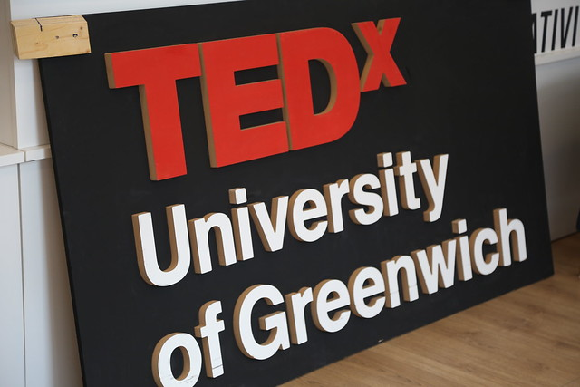
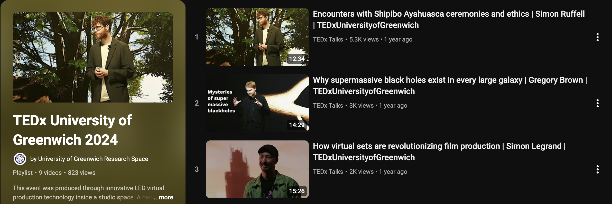
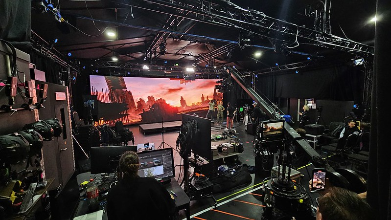
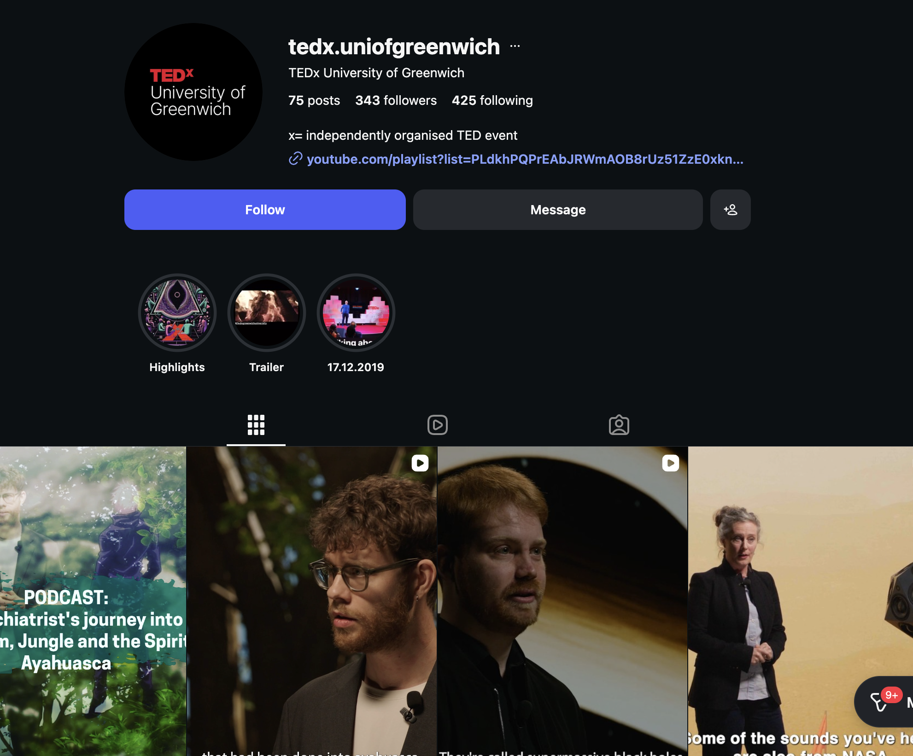
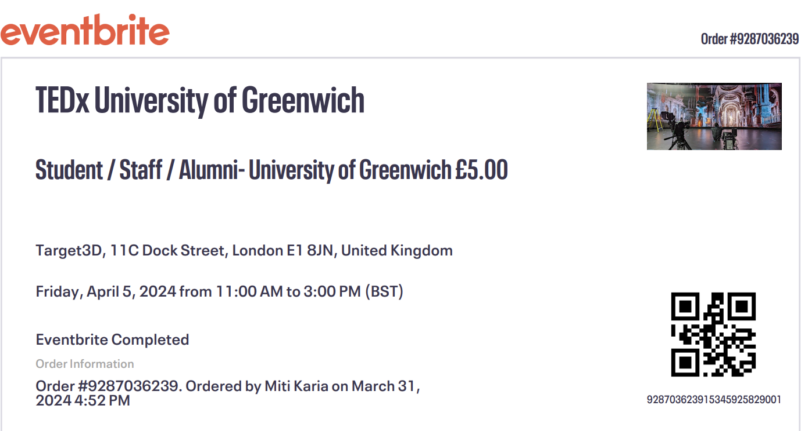
Public events campaign · audience planning · inclusion and evaluation
Project brief
The brief asked for a public events programme that could bring residents together safely across Basildon, Billericay and Wickford. The campaign needed to balance celebration, inclusion, local business support, sponsorship income and post-campaign evaluation.
Key KPIs
The gap
The campaign needed to serve families, older residents, young people, diverse communities, residents with limited digital access and local businesses. Without a clear audience and delivery structure, the programme risked becoming fragmented across locations, channels and resident needs.
What I noticed
Different resident groups needed different routes into the campaign. Some would respond through digital channels, some through community spaces, some through local businesses and some through physical visibility across the town centres. Inclusion could not sit at the end of the plan. It had to shape the programme from the beginning.
The approach
I structured the proposal around a six-strand events programme, supported by a multi-channel communications plan, a delivery timeline, governance checkpoints and a post-campaign evaluation framework tied to resident satisfaction, access and budget awareness.
Process
Before launch
Mapped six audience groups and structured the campaign across Basildon, Billericay, and Wickford. Built a six-strand events programme with channel planning and stakeholder preparation.
During campaign
Connected town-centre events, community activity, and resident-facing communications through a multi-channel plan with launch and live-event messaging.
After campaign
Built evaluation into the timeline: resident feedback, satisfaction review, budget awareness, and governance checkpoints for future delivery.
Final result
The proposal turned a broad public events brief into a practical campaign framework. It showed how events, communications, sponsorship, inclusion, governance and evaluation could work together across three town centres.
The value of the work was in making the campaign deliverable: clear audiences, clear channels, clear delivery checkpoints and a way to measure whether the programme had worked for residents.
Planned outcomes
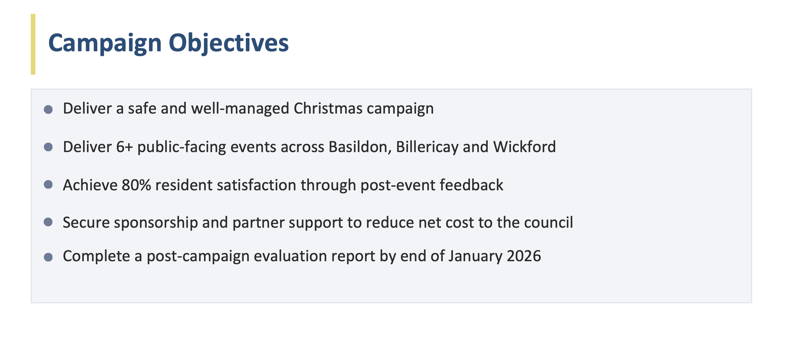
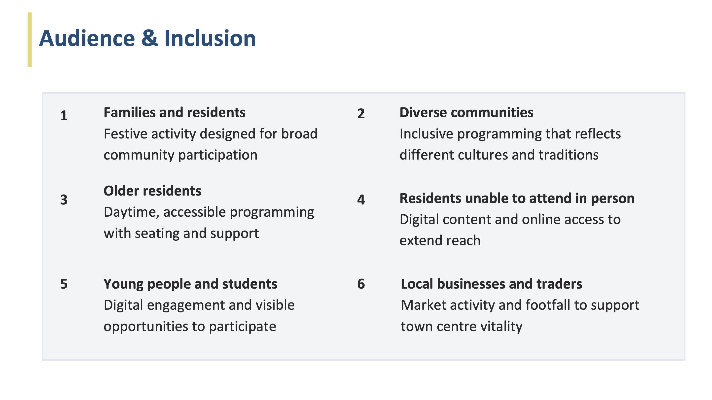
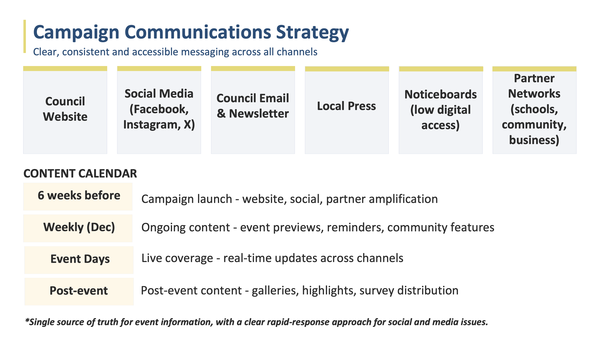
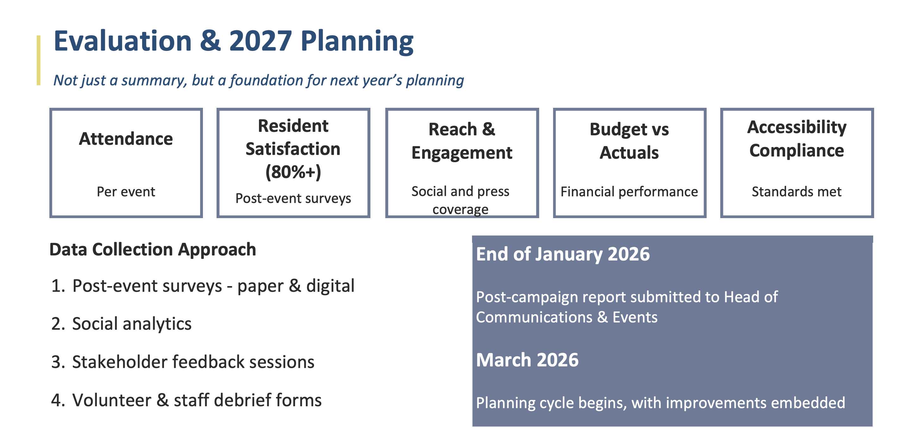
Communications repositioning · accessible messaging · channel strategy
Project brief
The organisation needed to speak more clearly to HR Directors, EDI officers and corporate audiences while staying rooted in neurodivergent lived experience. The existing communication carried strong purpose, but the message was too dense, too internal and too difficult for new audiences to quickly act on. The work was to simplify the tone, sharpen the positioning and build a clearer communication system across brand, content and social media.
Key KPIs
The gap
The existing communication was built around advocacy language and internal understanding. It explained the mission in detail, but it did not make the value easy enough for HR and EDI audiences to understand quickly. The tone was losing the message through over-complicated and saturated information.
What I noticed
The audience needed simplicity, relevance and motivation. HR and EDI decision-makers did not just need neurodiversity education. They needed to understand the workplace problem, the value of NDSA’s expertise and the practical next step.
The approach
I reframed the communication around audience need: clearer language, a sharper positioning route, a more supportive tone of voice, stronger visual direction and a social media strategy designed to educate, engage and convert HR and corporate audiences.
Process
Audience and insight
Defined HR Directors, EDI officers, and corporate audiences. Used research to identify the need for simplicity, relevance, and motivation.
Message and tone
Simplified the mission statement from around 400 words to 40. Reworked tone from over-complicated to clear, actionable, and inclusive.
Channels and identity
Developed positioning, visual identity direction, and a social strategy across LinkedIn, Instagram, X, and email campaigns.
Motto shiftFrom “Nothing about us, without us” feeling unclear and demanding in this context, to “With NDSA, it’s not just about inclusion - it’s about transformation.”
Final result
The work moved the organisation from dense, internally familiar communication to a clearer audience-led brand system. The repositioning clarified who the message was for, what value NDSA offered and how the organisation could show up across tone of voice, visual identity and social content.
Engagement improved by 12%, but the more useful shift was structural: the organisation had a sharper answer to what it was saying, who it was for and why it mattered.
What changed
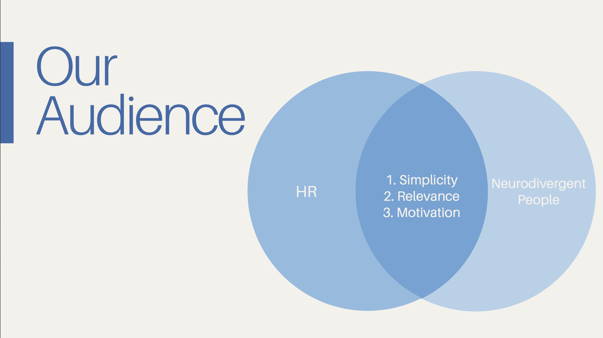
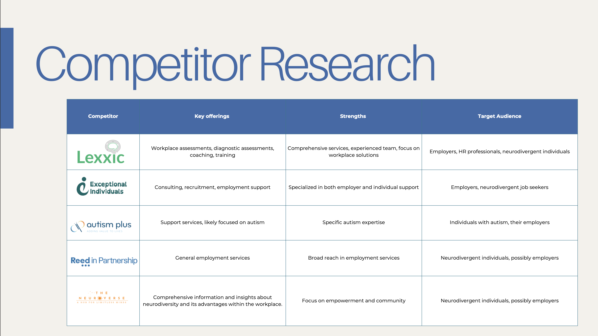
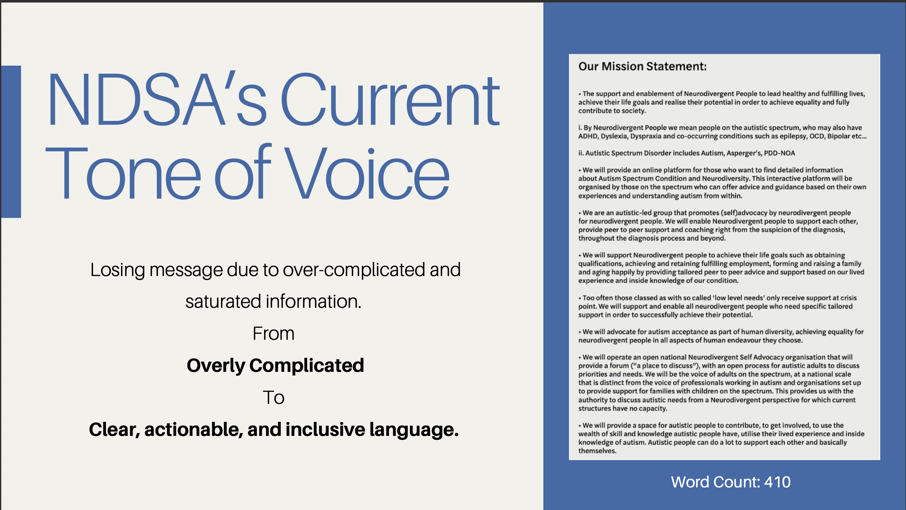
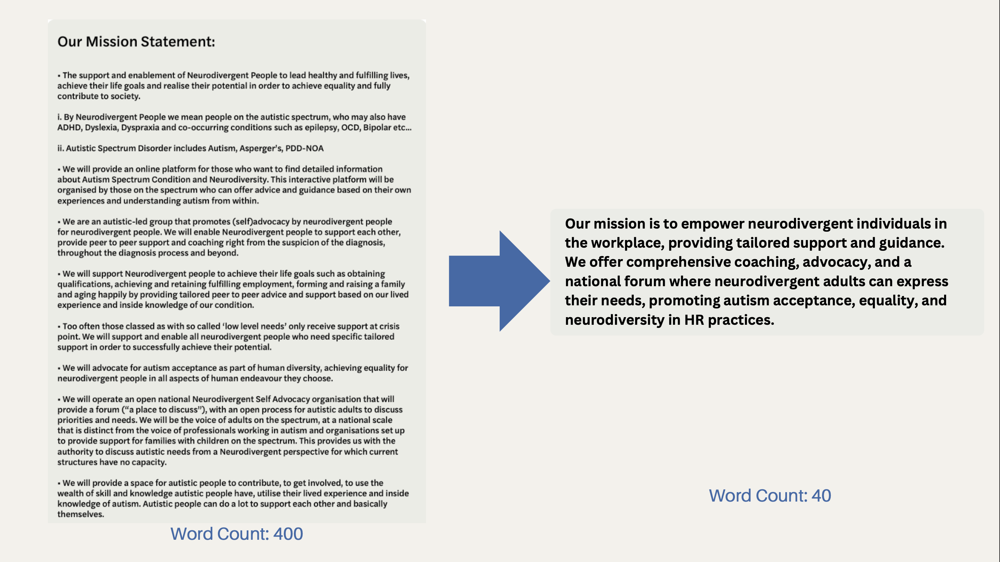
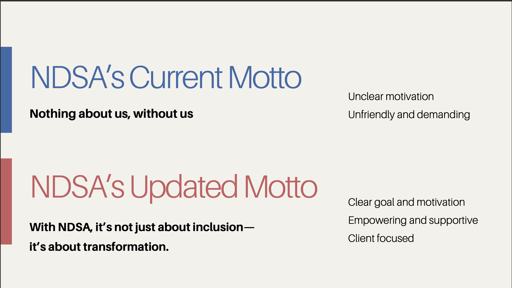
Social impact · anti-racism comms · campaign rollout
Project brief
The brief needed a campaign idea that could respond to rising racism and xenophobia while staying rooted in what the café naturally represents: global ingredients, immigrant ownership, everyday gathering and cultural connection. The concept used coffee as a shared ritual to turn a social issue into a community-facing campaign.
Key KPIs
The gap
The café already carried a strong story through its immigrant ownership, global ingredients and multicultural roots. The challenge was to turn that story into a public-facing campaign that could speak against racism without becoming heavy, generic or disconnected from the café experience.
What I noticed
The strongest insight was that coffee already carries the campaign message. It moves across countries, cultures, people and rituals. That made it a natural symbol for connection, giving the campaign a way to talk about belonging through something familiar, everyday and shared.
The approach
I built the campaign around #BrewedToUnite: Welcome Beyond Borders. The idea translated the café's multicultural story into posters, in-café participation, pop-up conversations, community storytelling and social content that could invite people into the message instead of only asking them to observe it.
Process
Final result
The concept turned the café's multicultural roots into a campaign platform for anti-racism, belonging and community participation. Instead of treating the café as only a place to buy coffee, the campaign positioned it as a space where people, cultures and stories could meet.
The value of the concept was in building a campaign that could move across message, space and participation: from posters and social content to in-café activations, pop-ups and community storytelling.
What the concept built
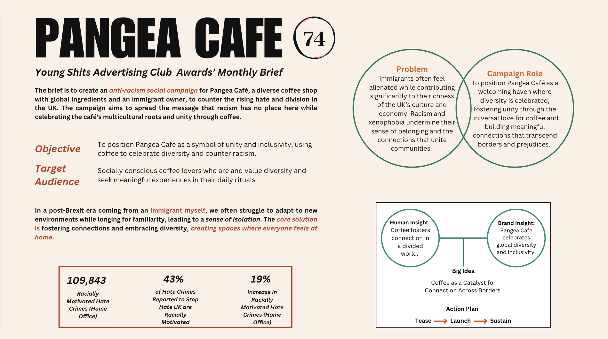
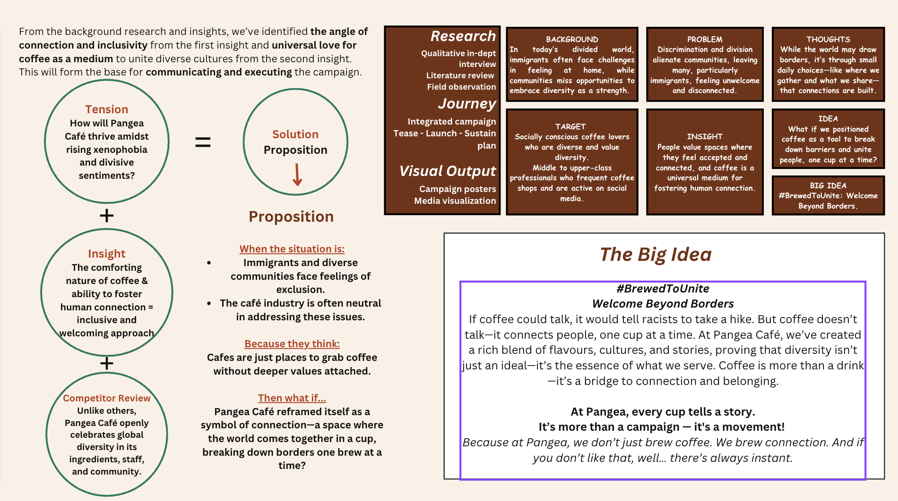
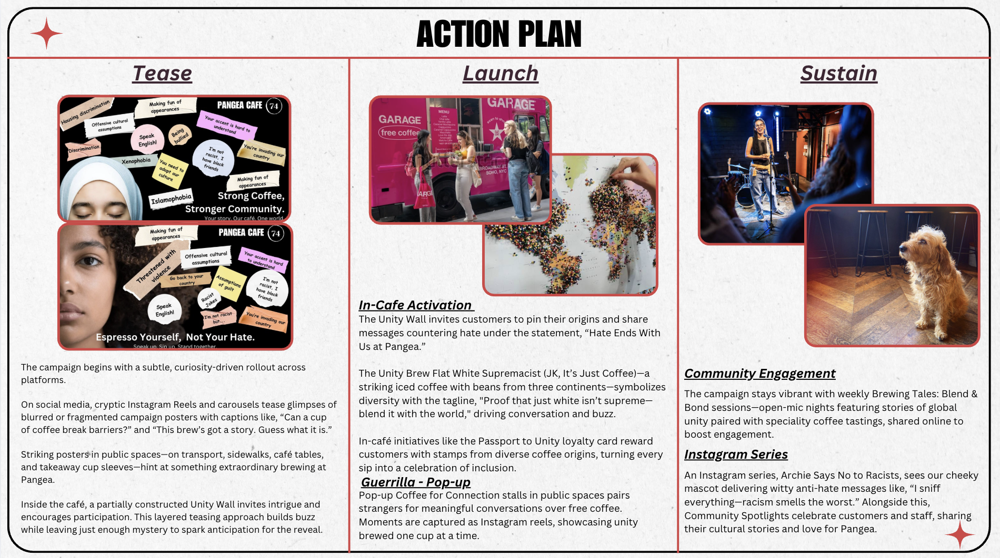
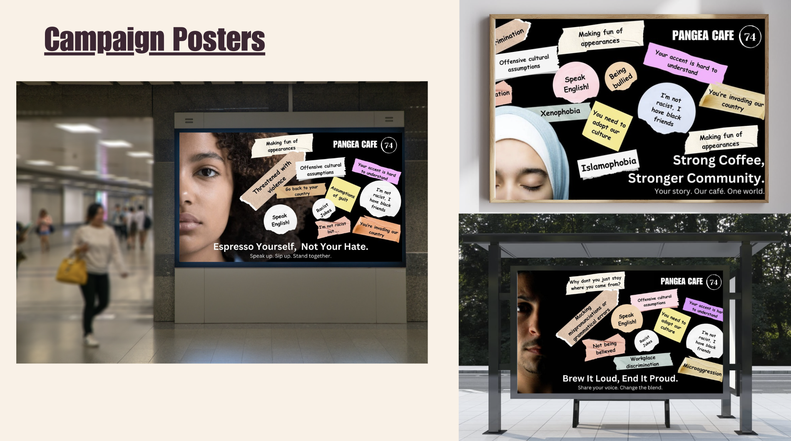
Multi-brand content delivery · workflow systems · performance optimisation
Project brief
The brand needed a communications system that could introduce a homegrown premium vodka brand with a clear Mumbai-rooted story. The work had to connect the name, product quality, local origin and launch idea into one consistent voice across the copy guide, social content, launch video direction and website copy.
Key KPIs
The gap
The brand had a strong origin story and product proposition, but the communication needed a clear voice. The challenge was to avoid generic spirits language and build a brand world that connected Mumbai, smoothness, local sourcing and premium lifestyle cues without losing consistency across channels.
What I noticed
The name carried the heritage of Bombay and the energy of Mumbai. That gave the brand a stronger platform than product features alone. The communication needed to make #StartWithSalsette feel like a brand thought, not just a hashtag.
The approach
I supported the brand's communication strategy through a copy guide, tone of voice framework, launch campaign copy, storyboard feedback and website copy. The goal was to make every audience-facing touchpoint sound like one consistent brand, from launch content to the live website.
Process
Foundation
Defined what the brand is, how it is made, and where it sits in the market. Built tone of voice guidance around homegrown pride and premium-but-approachable language.
Pre-launch and launch
Created writing rules and launch copy across grid concepts, #StartWithSalsette messaging, and product feature posts.
Live channels
Developed website copy for the brand story, USP sections, and cocktail recipe content so every touchpoint sounded like one brand.
Final result
The work turned the brand's origin, product features and Mumbai-rooted story into a connected brand communication system. The copy guide gave the brand a reusable voice, the launch content created a route for #StartWithSalsette, and the website copy translated the brand world into public-facing sections.
The outcome was not just individual copy assets. It was a strategic communication foundation that could support launch, social content, product education and the live website.
What the work built
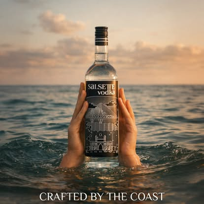
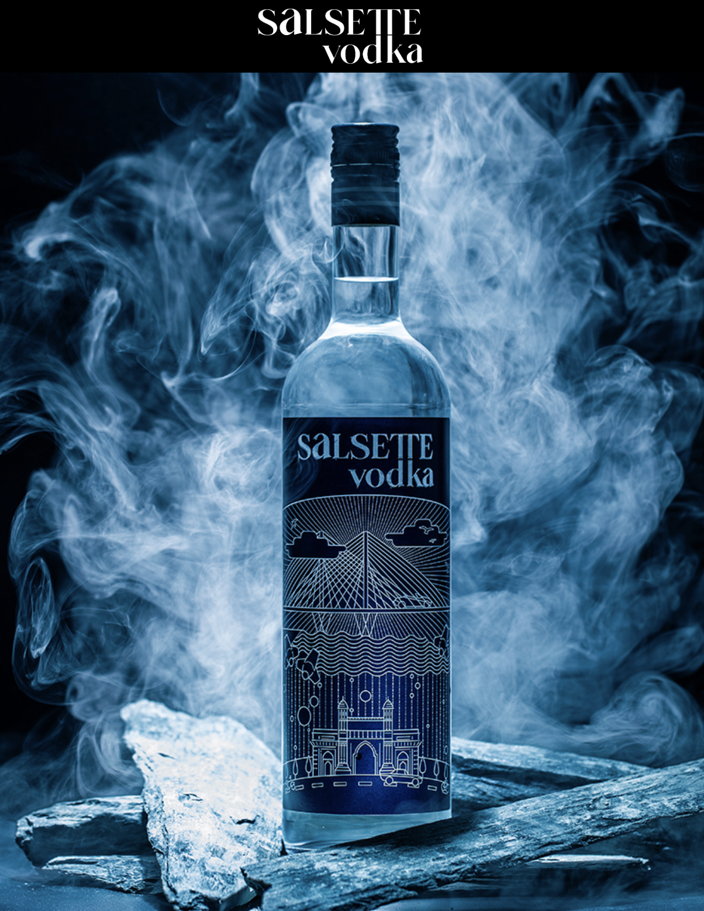
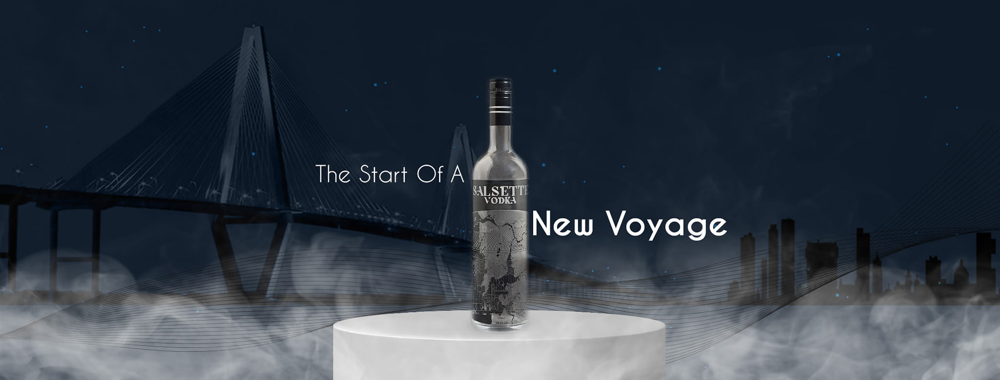
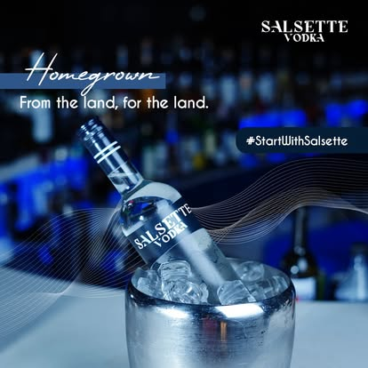
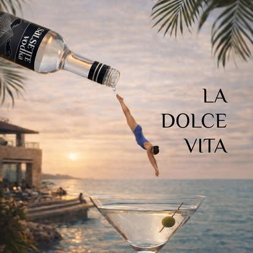
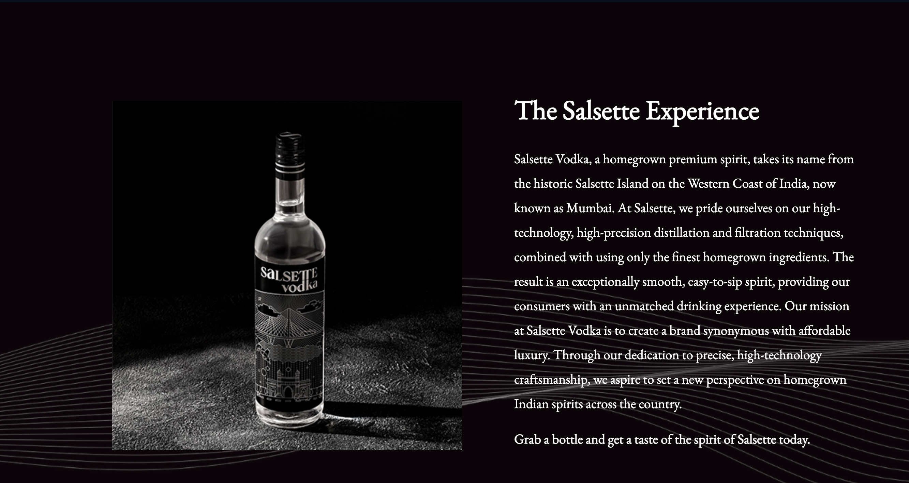
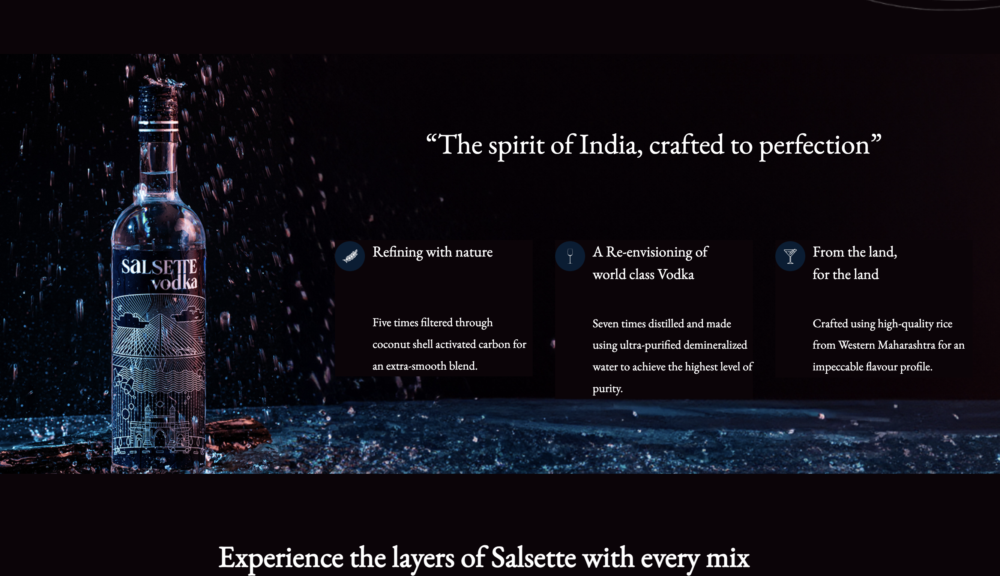
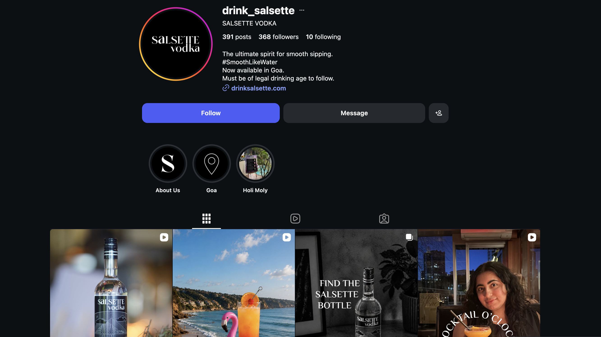
This is the lighter, sharper side of the portfolio: quick-turn briefs, campaign routes, cultural copy and self-initiated ideas that show how I move from insight to idea, and from idea to message. These pieces sit beside the main project work and show range across behaviour change, cultural reference and brand strategy thinking.
A wider collection of quick-turn briefs, campaign concepts and copy-led ideas, from behaviour-change prompts to cultural copy routes and brand strategy exercises. Use it to see how I test ideas quickly before shaping them into fuller communication or campaign work.
A quick look at the kinds of projects in the creative archive, from social-purpose campaigns to behaviour-change briefs, cultural copy routes and brand strategy exercises. Each one is short by design, but still shows insight, message direction and how an idea could travel into real communication.
A quick-turn idea using the London Eye as a bicycle wheel, linking cycling, London identity and savings through one instant visual read.
A post-rebrand strategy exercise exploring three ways to keep the brand active beyond launch: local pods, sustainability programming and a community platform.
Manchester music references reworked into poster routes for home-service categories, using cultural memory and humour to make utility easier to recall.